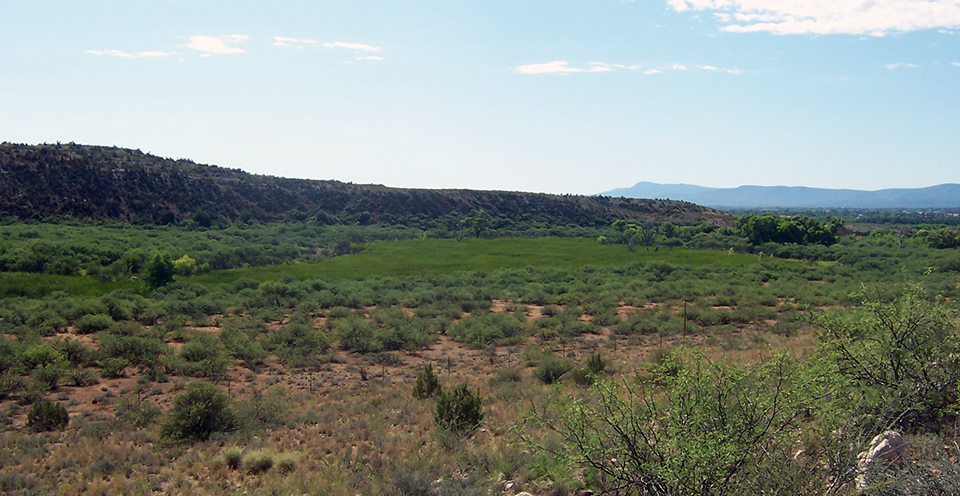

ARIZONA / VERDE VALLEY / A TOURISM PLANNING STUDY
The next stop
needs the right season.
Which nearby destinations should Arizona consider for seasonal side-trip promotion from Sedona?
Start with Cottonwood and Jerome. Test a smaller history itinerary in Camp Verde. Let the season—and local capacity—shape the invitation.
Follow the evidence ↓For Arizona tourism planners · 2024–2025 park data · Research checked September 2026

Context photograph; Tuzigoot is not in the six-park comparison.
DIFFERENT RHYTHMS.
Two Sedona-area reference sites.
Four nearby candidate sites.
144 monthly observations.
Opening-year limits flagged.
01 / THE SEASONAL MISMATCH
Summer draws swimmers.
Other places follow another rhythm.
Slide Rock peaks in summer. Cottonwood’s Dead Horse Ranch and Jerome peak in spring. Explore each park relative to its own busiest month before comparing the totals.
A year in six places
2025 · monthly park visitsSource: Arizona State Parks attendance reports, compiled by Northern Arizona University. Definitions & original reports ↗
Quieter does not mean ready for more visitors. Heat, opening days, staffing, parking, and ecological limits are missing from the monthly counts.